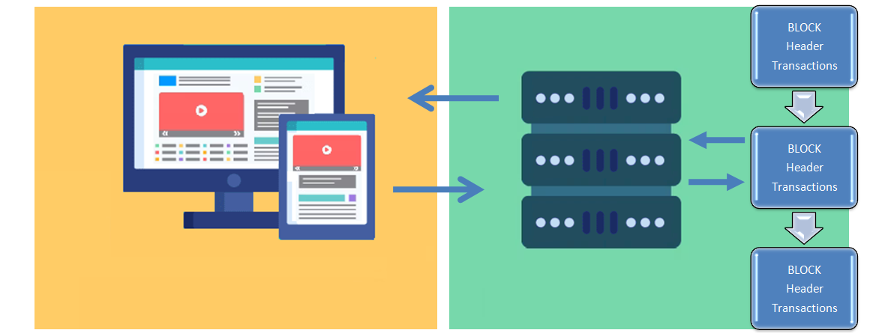

Globaldce is censorship resistant open-source decentralized collaboration environment powered by its native cryptocurrency
The globaldce open-source decentralized collaboration environment can be used to create, manage and execute decentralized collaboration applications.
These decentralized collaboration applications put into practice a mutual contract also called smart contract. They are deployed and publicly viewable in the globaldce blockchain.
Globaldce represents an alternative to the classic client-server architecture. It represents also an alternative to
smart contract platforms that force users to rely on central servers for the front end of their applications.

Traditional web application
Users request and consume front end code
Servers deliver front end code and execute backend code

Existing decentralized application
Users request and consume front end code
Servers deliver front end code and communicate with the blockchain

Globaldce decentralized application
Users request and consume front end code from any full node in the blockchain
Globaldce native cryptocurrency
Globaldce coins are created and managed according to a protocol that rewards agents (called "miners") who have processed transactions.
These miners use their computing power to verify, secure and record transactions in the globaldce blockchain. The name blockchain
comes from the fact that the basic entity of globaldce is called a block, and that the blocks are then linked into a chain, the blockchain.
For each new block accepted, the verification-securing-registration activity, called mining, is remunerated by newly created globaldce coins
and by the fees of the transactions processed. As a currency or commodity, globaldce coins can be exchanged for other currencies or commodities,
goods or services. The cryptocurrency exchange rate is set on specialized marketplaces and fluctuates according to the law of supply and demand.
It is possible to buy globaldce coins online on specialized platforms, physical terminals or in exchange for any good or service with a person
who already has them (the transaction can be done from smartphone to smartphone). The platforms also make it possible to follow in real time
the evolution of the price of globaldce coins compared to other currencies or cryptocurrencies.
Globaldce collaboration
Through version control system and documents sharing functionalities the goal of globaldce is to establish a collaboration environment
able to support next generation decentralized applications.
Document version control facilitates work flow and shorten product developments and release cycles of complex projects. In deed, without document version control, version management issues consume on average 83% of
productivity [Perforce]. Furthermore, centralized document control systems are not censorship resistant and can be easily tampered,
therefore, compromising the credibility of changes and their update history.
As on chain storage can be very expensive in the context of globaldce documents are shared using IPFS peer-to-peer network for storing
and sharing data. IPFS provides a high-capacity content-addressable block storage model [Benet]. Thus, instead of storing the whole file
on the blockchain users only store IPFS link on blockchain.
Finally, we believe that smart contract functionalities combined with a blockchain based decentralized version control system can bring
about a unprecedented level of collaboration to the world of decentralized applications and unleash the full potential of web 3.0 .
[Perforce] Perforce, The Case for Better Document Collaboration, Knowledge Worker Survey, http://info.perforce.com/rs/perforce/images/versioning-report.pdf, Perforce Software.
[Benet] J. Benet, IPFS-content addressed, versioned, P2P file system, 2014, arXiv preprint arXiv: 1407.3561.